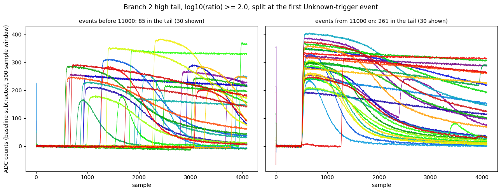
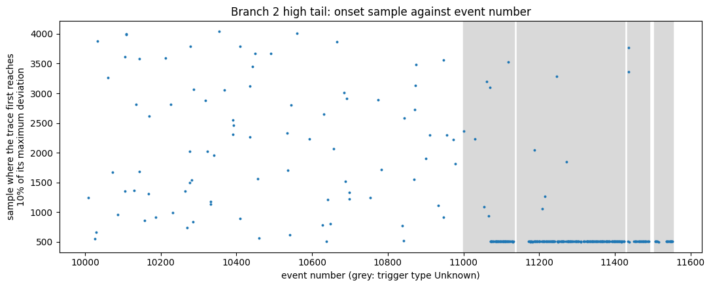
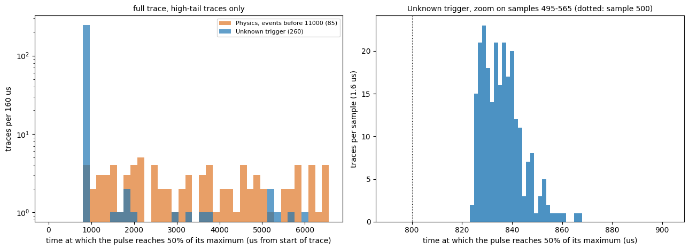
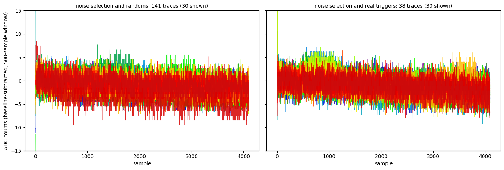
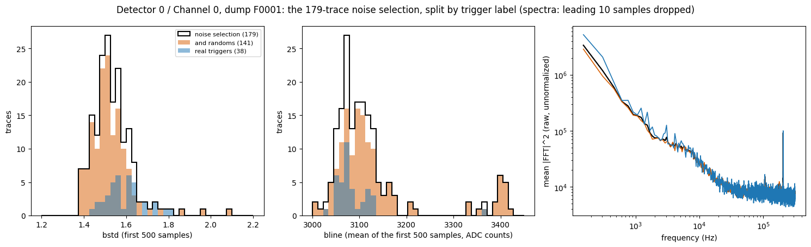
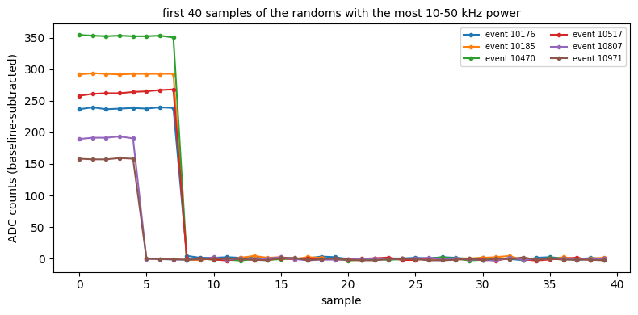

Why does bstd_1000 have so many more high-bstd traces than bstd? (series 07221203_2025, dump 1)
Code Repository
07221203_2025_dump1_bstd_time.ipynb— everything below. Pinned to74639f5.python/—pulse_ioandpulse_quantities(bstd,bstd_1000,half_max_time_us),pulse_cuts(randoms,real_triggers) andpulse_io.trigger_types(see Note 1a). Pinned to74639f5.
Data and setup
Everything here uses Detector 0, Channel 0 of series 07221203_2025, dump F0001, the same data as Note 2. The run log lists the series as Run76, Side2, PuBe with a Pb&poly lead stack and borax, −83.2 V, trigger setting DCRC1pA 2, 30 dumps (1.89 GiB on NSDF); dumps F0001–F0005 are downloaded locally (see Note 1). The dump has 4551 channel groups: 1517 events with traces, each with 3 detectors of 4 channels. Detector 0 / Channel 0 contributes 1517 traces of 4096 samples at 1.6 µs per sample (6.55 ms per trace), numbered as events 10000–11569 (53 event numbers in that range have no traces). The dump’s .csv gives each event a trigger type and a timestamp; the timestamps have one-second resolution and span 02:25:47 to 02:26:45 UTC on 4 Dec 2022.
The quantities are the ones defined in Note 2 (bstd, bline and ratio = dev / bstd) with the pretrigger window set to the first 500 or first 1000 samples and the first g = 10 samples skipped. bstd and bline are the standard deviation and mean of the first 500 samples, and bstd_1000, bline_1000 the same over the first 1000; dev is the largest deviation from the baseline after the window. “High tail” means log10(ratio) ≥ 2.0 with the 500-sample window.
The question
Note 2 found many more high-bstd traces with the 1000-sample window than with the 500-sample one (25% vs. 2% above bstd = 32.48 over all 1517 traces of Detector 0 / Channel 0). Two possible explanations:
- Random pulses. If pulses land at random positions in the 4096-sample trace, the chance of one inside the window should scale with its length, 1000/4096 vs. 500/4096, only a factor of 2. A pulse that starts earlier has more time to raise the scatter, which could push the ratio somewhat above 2.
- A change in the data. At some point the dump could switch to triggered data whose trigger point sits between sample 500 and 1000.
Starting point: bstd and bstd_1000 plotted against time. Events are numbered in time order within a dump (checked: strictly increasing for these traces), so the event number is used as the time axis.
bstd and bstd_1000 against event number

Unknown. Dashed line: bstd = 32.48.The dump has two distinct parts. Events 10000–10999 (1000 traces, all trigger type Physics) look alike in both panels: mostly quiet, with a sparse scatter of high values. From event 11000 on, the recorded trigger type alternates between segments of Unknown events (8 segments, 49–76 events long, 509 traces in all) and single Physics events. In seven of the eight Unknown segments bstd stays quiet while bstd_1000 jumps to about 100 or more for most traces. The exception is the first segment (events 11000–11067), which looks like the early data (see the segment-by-segment table below).
Terminology: a segment is a stretch of consecutive events with the same trigger type. “Run” is kept for a whole data-taking period (Run 76).
The fractions, by region
| Region | Traces | Median bstd | Median bstd_1000 | % bstd > 32.48 | % bstd_1000 > 32.48 | Ratio |
|---|---|---|---|---|---|---|
| Events before 11000 (all Physics) | 1000 | 1.53 | 1.61 | 2.7 | 5.9 | 2.2 |
| From 11000 on, trigger Unknown | 509 | 1.56 | 78.20 | 0.8 | 62.7 | 79.8 |
| From 11000 on, trigger Physics | 8 | 12.5 | 12.5 | 1.0 | ||
| All traces | 1517 | 2.1 | 25.0 | 11.8 |
Of the 379 traces with bstd_1000 > 32.48, 59 (16%) come from events before 11000 and 319 (84%) from Unknown-trigger events after it.
Segment by segment (the Unknown segments, in event order; “tail” and “aligned” are defined in the next section):
| Segment (events) | Traces | Median bstd_1000 | % bstd_1000 > 32.48 | In tail | Aligned |
|---|---|---|---|---|---|
| 11000–11067 | 57 | 1.6 | 7 | 5 | 0 |
| 11071–11133 | 63 | 135.1 | 83 | 47 | 46 |
| 11141–11212 | 72 | 43.5 | 56 | 28 | 26 |
| 11214–11289 | 76 | 100.8 | 64 | 49 | 46 |
| 11291–11362 | 72 | 115.1 | 71 | 41 | 41 |
| 11364–11425 | 62 | 122.6 | 84 | 44 | 44 |
| 11434–11491 | 58 | 70.6 | 67 | 27 | 25 |
| 11505–11553 | 49 | 58.5 | 65 | 19 | 19 |
The first segment is quiet in both windows, like the events before 11000. The change in bstd_1000 starts with the second segment, at event 11071, so the trigger label alone does not separate the two behaviors.
The aligned pulses: Branch 2 high tail
The Branch 2 high tail of Note 2 (500-sample window, log10(ratio) ≥ 2.0, 346 of 1517 traces) shows pulses that all rise at almost the same sample (see its high-tail figure). Repeating the selection with the library and splitting it at event 11000:
| Region | Traces | In the tail | Fraction |
|---|---|---|---|
| Events before 11000 (Physics) | 1000 | 85 | 8.5% |
| From 11000 on, Unknown | 509 | 260 | 51.1% |
| From 11000 on, Physics | 8 | 1 | 12.5% |
| All | 1517 | 346 | 22.8% |
The tail traces do not all come from the region after 11000: 85 of the 346 are earlier events. But those 85 look different from the rest.

Defining the onset as the first sample after 500 where a trace reaches 10% of its own maximum deviation (rise_sample with fraction=0.1, still under development), 247 of the 261 tail traces from event 11000 on have it at or before sample 520 (median 507), against 1 of the 85 earlier ones (median 2025, spread over the whole trace). Overall, 248 of the 346 tail traces are aligned; all but one (event 10637, onset 511) are in the Unknown segments.

Unknown trigger). The aligned pulses form the line at the bottom, starting at event 11071; the scattered points are unaligned pulses.The aligned pulses start in segment 2 and later. Segment 1 has 5 tail traces and none aligned. Eight tail traces inside segments 2–8 are not aligned.
When do the Unknown-trigger pulses rise?
A new library quantity, half_max_time_us (Note 1a), gives the time in microseconds from the start of the trace (1.6 µs per sample) at which a pulse first reaches 50% of its own maximum deviation. It is measured with the 500-sample window, and only means something for a trace that has a pulse, so the histograms use the high-tail selection above as “has a pulse”. It is still under development, like rise_sample, on which it is built.

Unknown trigger only, one sample (1.6 µs) per bin; sample 500 is at 800 µs (dotted).| High-tail traces | Traces | 10th / 50th / 90th percentile (µs) | At or before 870 µs |
|---|---|---|---|
Unknown trigger | 260 | 827 / 836 / 853 | 246 (95%) |
| without segment 1 | 255 | 827 / 835 / 849 | 246 (96%) |
Physics, events before 11000 | 85 | 1288 / 3346 / 6016 | 2 (2%) |
Most Unknown-trigger pulses reach half of their maximum about 836 µs into the trace (sample 522), in a narrow peak: 80% of them between 827 and 853 µs (samples 517–533), the earliest at 823 µs. Sample 500 is at 800 µs, so the half-maximum point comes about 35 µs (22 samples) after the end of the 500-sample window. The half-maximum time also includes each pulse’s own rise time and amplitude, so it is later than the start of the pulse (the 10% crossing above has a median at sample 507) and the spread of about 25 µs is not all trigger jitter. The Physics traces before event 11000, by contrast, are spread over the whole trace. The 249 Unknown-trigger traces that are not in the high tail have no pulse selected and are not in this histogram.
The noise selection with and without the trigger cut
Working assumption from here on: the trigger-type labels are swapped relative to their names. Events recorded as Physics are taken to be randoms and events recorded as Unknown are taken to be real triggers. The library has two cuts for this, pulse_cuts.randoms and pulse_cuts.real_triggers. Unlike the other cuts they take the per-event trigger type (from pulse_io.trigger_types) instead of pulses, and they are tagged under development because the mapping is unconfirmed.
The noise selection of Note 2 is the Tight band (log10(ratio) in [0.5, 0.7), 500-sample window, so dev is measured only after sample 500) plus log10(bstd) < 0.5: 179 traces. Adding randoms keeps 141 of them; the other 38 are real triggers.
| Sample | Traces | Events | Median bstd (10–90%) | Median bline | bline above 3300 |
|---|---|---|---|---|---|
| Noise selection | 179 | 10010–11544 | 1.523 (1.436–1.644) | 3099.5 | 19 |
… and randoms | 141 | 10010–11433 (2 after 11000) | 1.513 (1.427–1.608) | 3103.3 | 18 |
… and real_triggers | 38 | 11005–11544 | 1.580 (1.489–1.727) | 3073.1 | 1 |
The selection takes 141 of the 1008 Physics traces (14%) but only 38 of the 509 Unknown ones (7%). Fifteen of the 38 real triggers are in the first Unknown segment (events 11000–11067), the one without aligned pulses; the other 23 are spread over segments 2–8 (1 to 9 per segment).


randoms (orange, 141) and the part that passes real_triggers (blue, 38). Left: bstd. Middle: bline. Right: mean raw |FFT|2 of the baseline-subtracted traces with the leading 10 samples dropped (unnormalized, so only the comparison between curves means anything).- Baseline scatter is nearly the same:
bstdmedians 1.513 (randoms) and 1.580 (real triggers), with the real triggers a little broader on the high side. - Baseline level. 18 of the 141 randoms have
blineabove 3300 (a separate group near 3400 ADC counts); only 1 of the 38 real triggers does. - Spectrum. The mean spectra of the two groups agree, including the 204 kHz line (mean |FFT|2 in that bin: 9.0×104 for randoms before event 11000, 9.1×104 and 1.06×105 for the real triggers of segment 1 and of later segments).
The first version of this section, published earlier on 25 Sept, said the real triggers have less power between about 1 and 60 kHz, in the band where a pulse has its signal, and that this difference was largest in segment 1. That was wrong. It came from averaging spectra of whole traces: six of the 141 randoms (events 10176, 10185, 10470, 10517, 10807 and 10971) begin with a glitch, a step of 150–350 counts lasting 5–8 samples, and one real trigger has one too (170 counts). bstd and bline skip the first 10 samples, but an FFT does not, and a step that large puts a broad spectrum into the mean.

| Whole trace: mean | median | Leading 10 samples dropped: mean | median | |
|---|---|---|---|---|
| Randoms (141) | 1.14×105 | 1.20×104 | 1.16×104 | 1.16×104 |
| Real triggers (38) | 3.92×104 | 1.20×104 | 1.16×104 | 1.15×104 |
Per-trace power in the 10–50 kHz band (raw |FFT|2, mean over the band). The medians never differed; the mean of the whole-trace spectra of the randoms was ten times its median because of the glitch traces. With the first 10 samples dropped, mean and median agree in both groups.
The corrected band-by-band comparison, with the real triggers split at the end of segment 1 (139 randoms before event 11000; mean raw |FFT|2, glitch samples dropped):
| Band (Hz) | Randoms before 11000 (139) | Real, segment 1 (15) | Real, later (23) | Later / randoms | Segment 1 / randoms |
|---|---|---|---|---|---|
| 1000–3000 | 9.28×104 | 8.56×104 | 1.43×105 | 1.54 | 0.92 |
| 3000–10,000 | 4.40×104 | 4.45×104 | 5.08×104 | 1.16 | 1.01 |
| 10,000–50,000 | 1.16×104 | 1.17×104 | 1.16×104 | 1.00 | 1.01 |
| 50,000–150,000 | 7.83×103 | 7.86×103 | 7.87×103 | 1.01 | 1.00 |
| 250,000–310,000 | 6.79×103 | 6.75×103 | 6.79×103 | 1.00 | 0.99 |
Above 10 kHz the three groups agree to about 1%. Below 10 kHz the later real triggers are somewhat higher (1.54 times in the 1–3 kHz band, 1.16 times in 3–10 kHz); those bands contain only a few frequency bins, the group is 23 traces, and no uncertainty has been estimated, so this is not established as a difference.
What adding randoms does to the selection: it removes 38 of 179 traces (21%). The remaining 141 are 97% from before event 11000. In this dump it leaves the bstd distribution, the mean spectrum above 10 kHz and the 204 kHz line unchanged; the only difference found is the group of 18 randoms with bline near 3400. There is still no way in this dump to separate a trigger-type effect from a change in time, since only 2 randoms come after event 11000 and every real trigger does.
The 38 real triggers in the selection are, by construction, traces with no pulse in Detector 0 / Channel 0 after sample 500 (and none in samples 500–1000 either). Whatever triggered those events was not a pulse on this channel; other channels and detectors were not looked at.
The leading glitch matters for any spectrum study of this dump: Note 3 and later spectra should be checked for it (a glitch this size is enough to change a mean spectrum by an order of magnitude in the signal band).
Reading
- Idea 1 holds for the first 1000 events. With only
Physicstraces, the 1000-sample window has 2.2 times as many high-bstdtraces as the 500-sample one (59 vs. 27), close to the naive factor of 2. The small excess is in the direction expected if earlier pulses have more time to raise the scatter, but with counts this small it does not establish that. - Idea 2 matches the rest of the dump. The 25% vs. 2% headline number is almost entirely the
Unknown-trigger segments from event 11000 on, where the ratio is about 80 and no random-placement argument applies. There the 500-sample window is quiet (median 1.56, the same as before) and the 1000-sample window is loud, because a pulse rises at a nearly fixed sample, just after 500 (247 of the 260 tail traces there have their 10% crossing within 20 samples of 500; median 507). That fixed onset is what a trigger at about sample 505 would produce. - The alignment is a property of these segments, not of the ratio cut. The high tail before event 11000 is 85 traces with pulses at scattered times, what randomly placed pulses look like. So the lined-up pulses in the Note 2 high-tail figure come almost entirely (247 of 248 aligned traces) from the
Unknown-trigger segments from event 11071 on. - What the labels mean is not settled. A plausible reading is that the events before 11000 are randoms (a fixed number were taken, possibly 1000) and the aligned ones are triggered on real pulses, which would make the recorded
PhysicsandUnknownlabels look backwards; this fits the data above but rests on the trigger type in the.csvand on recollection of the DAQ configuration, neither confirmed. Segment 1 (11000–11067) does not fit either group cleanly: it carries theUnknownlabel but has no aligned pulses.
- What trigger type
Unknownmeans is not established. Its coincidence with the change inbstd_1000is an observation, not an explanation. - The onset sample uses
rise_sample, which is still under development, and only looks from sample 500 on; it says nothing about pulses that started earlier. The 20-sample window for “aligned” was chosen by looking at the plot. - The event number is the time axis. The
.csvtimestamps have only 57 distinct values (one-second resolution), spanning 02:25:47 to 02:26:45 UTC on 4 Dec 2022, so they cannot order events within a second. - Only 8
Physicstraces come after event 11000, too few to compare with the earlierPhysicsones. - This is one detector and channel of one dump.
Next steps
- Find out what segment 1 (events 11000–11067) is: it is labeled
Unknownbut behaves like the early data. Check the other.csvcolumns (readout type) and other channels for a change at 11068–11071. - Confirm the trigger settings for this series (number of randoms, trigger type and threshold) from the DAQ configuration, and whether the same layout appears in dumps 2–5, other channels and other series.
- Look at the 8 tail traces in segments 2–8 whose onset is not near 500, to see what they are.
- Repeat the comparison on other dumps, where there may be randoms and real triggers in the same stretch of time, to separate a trigger-type effect from a time effect; look at the other channels and detectors of the 38 real-trigger noise traces to see what triggered them.
- Decide whether the Note 2 selection cuts should be restricted to events before 11000, or made on the trigger type, and whether the Note 2 fractions need to be restated by region.